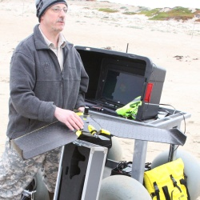

WORKING DRAFT
Meet the Instructors
Dr. Sean Hogan
 Sean Hogan is the founder and Director of the IGIS Drone Service Center. He has extensive experience in a wide range of UAS drone mapping and data collection projects, and is an expert on several drone platforms. He is also the UC ANR designated authority for drone operations. Sean developed the IGIS drone workshop model combining theory, equipment familiarization, regulations, hands-on flight practice, and data processing and analysis. Sean received his PhD in Geography at UC Davis. He was also a member of the UC Davis Center for Spatial Technology and Remote Sensing, providing GIS and remote sensing support for interests in precision agriculture, monitoring natural resources and calibration of NASA’s airborne imagers. His favorite drone is the eBee Plus.
Sean Hogan is the founder and Director of the IGIS Drone Service Center. He has extensive experience in a wide range of UAS drone mapping and data collection projects, and is an expert on several drone platforms. He is also the UC ANR designated authority for drone operations. Sean developed the IGIS drone workshop model combining theory, equipment familiarization, regulations, hands-on flight practice, and data processing and analysis. Sean received his PhD in Geography at UC Davis. He was also a member of the UC Davis Center for Spatial Technology and Remote Sensing, providing GIS and remote sensing support for interests in precision agriculture, monitoring natural resources and calibration of NASA’s airborne imagers. His favorite drone is the eBee Plus.
Dr. Brandon Stark
Brandon Stark is the director of the University of California’s Center of Excellence on Unmanned Aircraft System Safety, where he provides system-wide UAS expertise to all 10 of its campuses, cooperative extension network, field stations, and the UC’s Natural Reserve System. He is an expert on UAS technology, their use in research and commercial operations, regulations and policy, and risk assessment. He developed the UC UAS Safety Management System as an infrastructure to support and train UC staff, faculty and students for regulatory compliance, risk assessments and safety. He is also the chief policy writer for the UC system drone policy, and architect for UC UAS training programs and fleet management. As a grad student at UC Merced, Brandon built and crashed over 100 experimental drones.
Dr. Maggi Kelly
 Maggi Kelly is a Professor and Cooperative Extension Specialist based at UC Berkeley. She is an accomplished geospatial data and analysis innovator. She has expertise in using data from spatial models, remote sensing, drones, lidar, historical archives, surveys, participatory mapping, and the field to gain insights about how and why California landscapes are changing, and what that change means for those who live on, use, and manage our lands. She is Faculty Director of the UCB Geospatial Innovation Facility (GIF) and Director of the ANR Statewide Program in Informatics and Geographic Information Systems (IGIS), both of which are dedicated to research, outreach and service in support of applied geospatial data and analysis. She holds a Part 107 Remote Pilot Certificate, and her favorite drone is the Mavic Pro.
Maggi Kelly is a Professor and Cooperative Extension Specialist based at UC Berkeley. She is an accomplished geospatial data and analysis innovator. She has expertise in using data from spatial models, remote sensing, drones, lidar, historical archives, surveys, participatory mapping, and the field to gain insights about how and why California landscapes are changing, and what that change means for those who live on, use, and manage our lands. She is Faculty Director of the UCB Geospatial Innovation Facility (GIF) and Director of the ANR Statewide Program in Informatics and Geographic Information Systems (IGIS), both of which are dedicated to research, outreach and service in support of applied geospatial data and analysis. She holds a Part 107 Remote Pilot Certificate, and her favorite drone is the Mavic Pro.
Dr. Iryna Dronova
Iryna Dronova is an Assistant Professor of Landscape Architecture & Environmental Planning at UC Berkeley. Her research and teaching focus on applications of landscape ecology to inform sustainable, multi-functional landscape-designs, and decision-making in environmental planning and natural resource management. Her group works in a variety of ecosystem types at scales ranging from the local to regional, with major efforts in the wetlands of the San Francisco Bay, Sacramento-San Joaquin River Delta, and urbanizing regions across the globe. She teaches a popular course on Applied Remote Sensing that focuses on strategies for working with different types of remote sensing data and extracting image-based landscape information for various environmental research and planning objectives.
Dr. Becca Fenwick
Becca Fenwick is the Director of the Environmental Information and Technology Program for the University of California Natural Reserve System (UC NRS) and leads the statewide environmental and climate-monitoring California Heartbeat Initiative (CHI). Based at UC Santa Cruz, Becca manages a geographically-dispersed IT team who work with reserve staff, researchers, and the public to support all of the needs that come with using technology in the great outdoors. In partnership with researchers at Berkeley and UC ANR IGIS, Becca has been spearheading the development of CHI, a long term environmental monitoring program on the UC NRS and RECs using UAV’s, environmental sensors and satellite imagery to look at the health of the state’s ecosystems. CHI is currently funded by the Gordon and Betty Moore Foundation. Becca earned her Ph.D in Marine Geology and Geophysics from Scripps Institution of Oceanography (UCSD). Previously, she served as the Director of two UC NRS reserves (Yosemite, Sequoia-Kings Canyon, and James San Jacinto Mountains), and her favorite drone is the eBeeX.
Dr. Mallika Nocco
Mallika Nocco is UC Cooperative Extension specialist in the Department of Land, Air and Water Resources at UC Davis. Her research examines soil-plant-water relations to better understand irrigation management, water productivity, precision agriculture; drought/salinity stress management, feedbacks between irrigation and climate. She uses aerial imagery and now drones to measure agricultural water and salinity stress as well as evapotranspiration (water use). She earned her MS and PhD from the University of Wisconsin-Madison and is a 2017 David H. Smith Postdoctoral Fellow. Her favorite drone is a Matrice 210.
Dr. Alireza Pourreza
 Alireza Pourreza is an Assistant CE Specialist of Agricultural Mechanization in the Department of Biological and Agricultural Engineering at UC Davis. His lab’s research is focused on Digital Agriculture, remote/proximity sensing, aerial data interpretation, and robotics and automation. His lab uses autonomous drones and advanced sensing systems for precise orchard/field monitoring, and site-specific crop management. He earned his MS and PhD in Agricultural and Biological Engineering at the University of Florida.
Alireza Pourreza is an Assistant CE Specialist of Agricultural Mechanization in the Department of Biological and Agricultural Engineering at UC Davis. His lab’s research is focused on Digital Agriculture, remote/proximity sensing, aerial data interpretation, and robotics and automation. His lab uses autonomous drones and advanced sensing systems for precise orchard/field monitoring, and site-specific crop management. He earned his MS and PhD in Agricultural and Biological Engineering at the University of Florida.
Dr. Ali Moghimi
Ali Moghimi is a postdoctoral scholar in the Digital Agriculture Lab at the University of California, Davis. He is passionate about conducting interdisciplinary research centered at the food-water-energy nexus. His current research focuses on developing and implementing innovative technologies (LiDAR and multispectral/hyperspectral imaging), automation (UAVs), and artificial intelligence (machine learning and deep learning algorithms) in agriculture to facilitate the digital revolution in agriculture. His favorite drone is Matrice 600 Pro.
Dr. Andy Lyons
Andy Lyons is Program Coordinator for the IGIS Program. He has a Part 107 Remote Pilot certification and supports IGIS drone projects through flights, data analysis, teaching, and development of open source tools for data management and mission planning. An alumni of UC Berkeley, Andy has taught classes at Berkeley and Stanford in population modeling, spatial analysis using open source software, cryptography, GIS, environmental problem solving, sustainability, African studies, and environmental narratives in science fiction film. His favorite drone is the Phantom IV Pro.
Logan Ebert
Logan Ebert is a graduate student in the Department of Land, Air and Water Resources at UC Davis. He research uses the High Resolution Mapping of Evapotranspiration (HRMET) model to map evapotranspiration over annual row crops and orchards. His work bridges the gap between research and practice in precision monitoring of crop stress. Logan is interested and excited to mentor undergraduate researchers who are interested in remote sensing of evaporation and drones.
Shane Feirer
Shane Feirer is the head of the GIS Service Center within IGIS, where he manages dozens of GIS projects for UC researchers. Based at the Hopland Research and Extension Center, Shane has a broad background in GIS applications for natural resources. As an IT manager, he maintains GIS and remote sensing software for UCANR, and is the architect of an online drone data repository based on ArcGIS Portal. At Hopland, Shane coordinates a longitudinal post-fire vegetation monitoring program with repeated drone imagery. His favorite drone is the Phantom IV Pro.
Pat Iampietro
 Pat Iampietro is the Marine Geospatial Systems Administrator at Cal State Monterey Bay. He administers and supports all geospatial software on the campus, and Chairs the campus UAS Safety Commitee. With a background in engineering | marine biology | GIS, he specializes in marine scientific instrumentation including MBES, sidescan, and sub-bottom profiling SONARs, still and video camera systems, ROV, USV, UAS, GPS and attitude sensors, scanning LiDAR, and other systems. His favorite drone is ____.
Robert Johnson
Robert Johnson is a GIS Programmer and Analyst with IGIS. Based at the Kearney Research and Extension Center, he has a broad background in all things GIS and specializes in programming and custom application development. He supports IGIS drone projects through flight operations, data management, post-processing, and equipment maintenance and repairs. An expert with the new ArcGIS Pro, Robert has developed many of the exercises at IGIS workshops. He holds a Part 107 Remote Pilot License, and his favorite drone is the DJI Inspire 1.
Chippie Kislik
Chippie Kislik is a graduate student in the Kelly Lab at UC Berkeley. Her research focuses primarily on the applications of unmanned aerial vehicles in terrestrial and aquatic ecosystems, with an emphasis on how multispectral imagery can identify nutrient and water availability in native oak species, as well as primary producers (algae & macrophytes) in the Klamath River. Chippie has a Part 107 Remote Pilot certification, and she loves to fly her Phantom 4 Pro drone. She is also exploring the capabilities of the Parrot Sequoia multispectral camera in her work.
Taylor Nelsen
 Taylor Nelsen is an Assistant Specialist in the Grain Cropping Systems lab in the Department of Plant Sciences at UC Davis. Her research focuses on nitrogen management using traditional agronomic methods in conjunction with new technologies such as proximal sensing devices, high resolution imagery and GIS. Originally from North Carolina, she has degrees in Environmental Science and Geography from UNC Chapel Hill, and a MS in Horticulture and Agronomy from UC Davis. When she’s not in the field, she teaches workshops in drone data processsing and analysis using open source software including R and QGIS.
Taylor Nelsen is an Assistant Specialist in the Grain Cropping Systems lab in the Department of Plant Sciences at UC Davis. Her research focuses on nitrogen management using traditional agronomic methods in conjunction with new technologies such as proximal sensing devices, high resolution imagery and GIS. Originally from North Carolina, she has degrees in Environmental Science and Geography from UNC Chapel Hill, and a MS in Horticulture and Agronomy from UC Davis. When she’s not in the field, she teaches workshops in drone data processsing and analysis using open source software including R and QGIS.
German Zuniga Ramirez
German Zuniga Ramirez is a Staff Research Associate in the Digital Agriculture Lab at the University of California, Davis. As an Staff Research Associate, he has been in charge of operating sUAV to collect reliable aerial datasets (RGB, multispectral/hyperspectral, and thermal images) for projects that are seeking to revolutionize the use of novel technologies in agriculture. He has extensive experience in using aerial data processing software such as Pix4Dmapper. His favorite drone is the Matrice 210.
Jonathan Rivas
Jonathan Rivas is a fourth-year undergrad studying Computer Science and Engineering at UC Merced. He holds a Part 107 Remote Pilot Certification and gained the majority of his flight experience as a drone operator for the Mechatronics, Embedded Systems and Automation (MESA) lab at UC Merced, and the UC Center for Unmanned Aircraft System Safety. He holds a 107.29 exemption allowing him to fly at night and his operations vary from inspecting buildings and recording campus events to mapping out caves and detecting/monitoring invasive plant species. His favorite drone is the Mavic 2 Zoom.